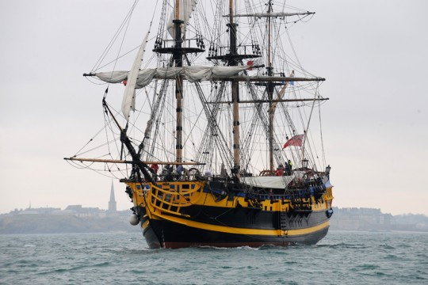

Our project focuses on an increase in shipwrecks during the 19th century. Our goal is to find out how technological advancements during this time period contributed to these wrecks.We decided to focus on a data spike that occurred between 1820-1890. A span of 70 years where shipwrecks dramatically increased, to explain this, we dove into the surrounding history around these shipwrecks during this period to find any possible outliers or anomalies that inadvertently contributed to this peak in shipwrecks. Our project focuses on the history relating to the evolution of ships during this time period.The rapid advancement in ship technologies initially had a detrimental effect on ship safety causing a disproportionate increase of shipwrecks in the post Civil War United States.
What were the major trading destinations during the time period, who was trading with who, and what does that tell us about the routes
The number of wrecks seen per year graphed over the time interval from 1700 - 2010
What kinds of vessels were wrecking around this time? How did this change over time?
A couple of maps showing the major areas and some information about individual incidents
A little about the background of the idea. Where we got our data, and a little about the limits of the project
An overview of the evolution of ships and a few examples from out data to show what these vessels look like